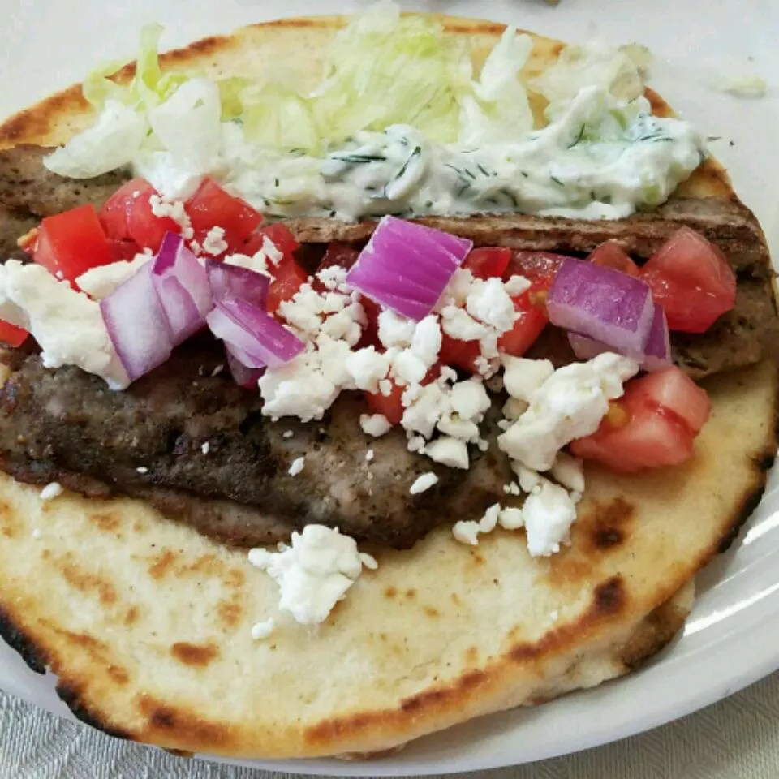

Tradtional Gyro Meat

Ingredients
- Onion (1/2)
- Ground lamb (1 lb)
- Ground beef (1 lb)
- Minced garlic (1 tbsp)
- Dried oregano (1 tsp)
- Ground cumin (1 tsp)
- Dried marjoram (1 tsp)
- Dried rosemary (1 tsp)
- Dried thyme (1 tsp)
- Ground black pepper (1 tsp)
- Salt (1/4 tsp)
Steps
- Finely chop an onion.
- Combine onions, lamb, beef, garlic, oregaon, cumin, marjoram, rosemary,
thyme, pepper, and salt in a large bowl. Mix with your hands until well combined.
Cover and refrigerate for 1-2 hours.
- Preheat the over to 325 degrees F (165 degrees C).
- Place the meat mixture into a food processor and pulse until Finely
chopped and the texture feels tackey. Transfer for a loaf pan and
pack down so there are no air pockets.
- Line a roasting pan with a damp kitchen towel. Place the loaf pan in the
center of the roasting pan and transfer to the oven. Carefully pour boiling
water into the roasting pan until it comes halfway up the sides of the loaf pan.
- Bake in preheated oven until gyro meat is no longer pink in the center
and the internal temperature registers 165 degrees.
- Pour off any accumulated fat, and allow to cool slightly before
slicing.